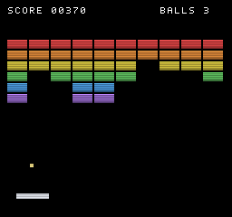

A framebuffer, an ECS, and a raycaster — in about 20k lines of Rust
The core is Rust compiled to WebAssembly. The face you write games against is TypeScript. Nothing in between is hidden: sprites are indices into sheets you uploaded, tiles are numbers in a grid, and the palette is a list of colours you can print.
Hardware profiles
Game Boy, NES, Neo Geo and VGA are presets with real resolutions, palettes and audio channel counts. They set the look. They do not enforce sprite caps while you build — a cap that silently drops sprites turns "too many objects" into "the player vanished", which teaches nobody anything. Check against a target when you export instead.
Raycaster built in
DDA wall casting, billboard sprites, distance fog, eye height and horizon pitch — plus hitscan queries, line of sight and A* pathfinding on the same grid. Four of the demos are first-person and none of them ship a 3D pipeline.
Physics you hand things to
usePhysics gives a body gravity and tilemap collision from the
engine rather than from a copy of the same loop in every game. Declare which
tiles are solid; the engine resolves the sweep.
Visual editor
Cathode Studio: a scene tree, an inspector, a pixel sprite editor, a sound maker, a tile level designer, and a block language that compiles to the same TypeScript you would have written.
Netcode primitives
A fixed clock, lockstep, and snapshot interpolation, with a
BroadcastChannel transport in the FPS demo so you can play it
tab against tab without a server.
Runs on the desktop
The same core, in a native window: winit, a GPU blit, cpal audio and gamepads.
cargo run -p cathode-platform-native plays a real game, and
--headless renders frames to PNG with no window and no GPU at all.
Boot a screen, put something on it, loop
There is no scene file to author before the first pixel and no build step between you and a reload.
import { BitmapFont, Cathode, Scene, Sprite } from '@cathode/sdk';
const engine = await Cathode.gameboy(canvas, 3);
const scene = new Scene(engine);
const font = BitmapFont.builtin(engine);
// Sheets are RGBA bytes you upload — generate them, or load a PNG.
const sheet = engine.raw.upload_sheet(16, 16, 16, 16, pixels);
const hero = new Sprite(scene, { sheet, frame: 0, x: 40, y: 60 });
engine.loop((dt) => {
if (engine.input.held(0, 'right')) hero.x += 60 * dt;
scene.update(dt);
font.draw('HELLO', 8, 8, 1);
});Four machines, and one that is whatever you say
Sprite budgets are advisory: the number the real hardware could show, reported
rather than enforced. Compare it against peak_sprites when you
export.
GAME BOY
- Palette
- 4 shades
- Sprites
- 40
- Audio
- 4 channels
NES
- Palette
- 54 colours
- Sprites
- 64
- Audio
- 5 channels
NEO GEO
- Palette
- full
- Sprites
- 380
- Audio
- 8 channels
DOS · VGA
- Palette
- 256 colours
- Refresh
- 70 Hz
- Audio
- 9 FM (OPL2)
CUSTOM
- Palette
- none imposed
- Sprites
- unlimited
- Used by
- the card games
Sixteen games, and all of them run
Every one is a reference for something specific. None of them draws outside the engine.
Dust Protocol
Round-based FPS: hitscan, A* bots, line of sight, and tab-to-tab netplay.
River Street
No-limit hold'em: a best-five-of-seven evaluator, side pots, three bots.
Bounce
Bouncing physics, buoyancy and charge jumps — with a tutorial to match.
Tetris
Ghost piece, wall kicks, seven-bag randomiser, Korobeiniki.
The same engine, in a native window
No browser, no WebAssembly, no JavaScript — crates/core has no idea
whether a canvas or a window is driving it. This frame was rendered by the native
binary with no GPU at all, through its headless mode.

# A window, with a gamepad if you have one
cargo run -p cathode-platform-native
# Another machine's look, same binary
cargo run -p cathode-platform-native -- --preset=gameboy
# No window, no GPU: 900 frames to a PNG
cargo run -p cathode-platform-native -- \
--headless 900 --shot shot.pngThe rules live in a module that imports nothing but the gamepad state, so the game has unit tests and the headless renderer can check that a build still draws the right thing — which is how both bugs in it were found.
Clone it and run something in under a minute
git clone https://github.com/acathon/cathode-retro-engine
cd cathode-retro-engine && npm install
npm run build:wasm
cd examples/tetris && npm run dev